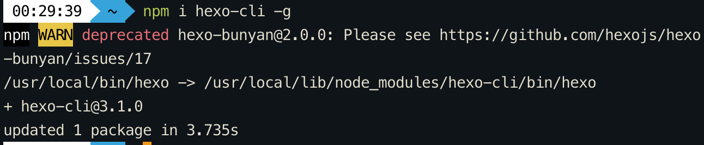
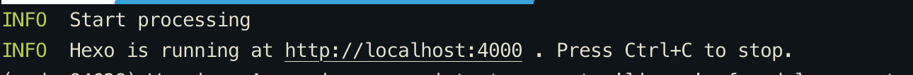
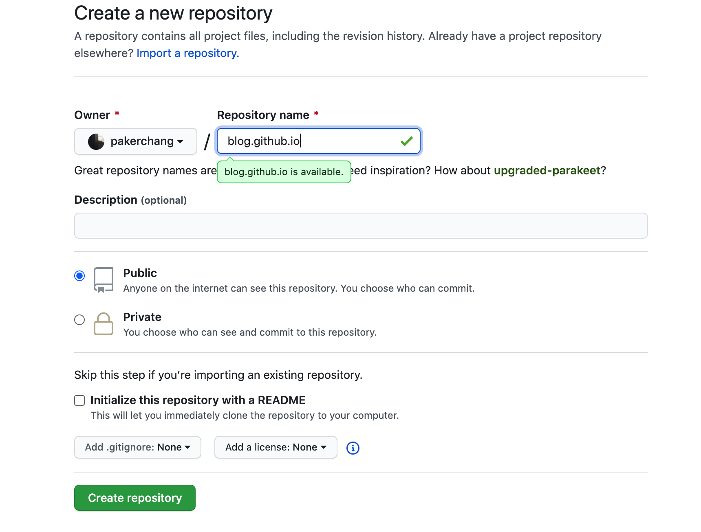
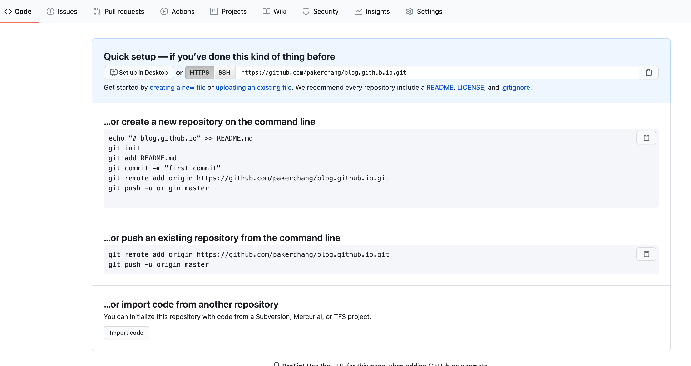
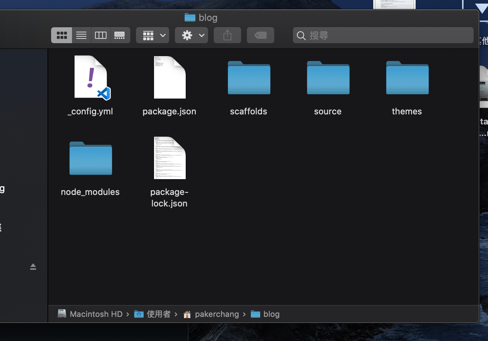

前言
Hexo目前是許多人使用的 Blog 框架，好處是架設簡單快速
原本打算自己寫一個，最後發現太過耗時，因緣際會下才找到 Hexo 這個好東西
此文主要是紀錄、複習安裝 Hexo 與 NexT 主題的過程，包括一些自己碰到的問題
Hexo安裝＆基礎設置
在裝Hexo前，需要先確保 node.js 及 git 安裝完畢
安裝Hexo
開啟終端
1 | npm install hexo-cli -g |
這邊曾碰過一個問題是

後來發現可能是因為版本更新問題，Hexo不再支援hexo-bunyan的問題
導致之後hexo init時會初始化不成功，只要補上這段就可以了
1 | npm install hexo-log |
安裝好之後可以檢查版本，如果有跳出就成功了
1 | hexo version |
將終端切換到要初始化 Blog 文件的路徑後，執行：
如果安裝時出現了路徑 is not empty，是因為安裝的資料夾內必須是淨空的，此條件下才能產生初始化檔案
1 | hexo init blog #初始化blog (資料夾名) |
嘗試運行指令，測試能不能成功在 localhost 執行
1 | hexo g #產生靜態文件 |
成功的話應該會看到
CMD + 點擊網址就能直接開啟

將 Hexo 配置到 GitHub
到 Github 創建一個新的 repository
在Repository name 替換成自己的名稱設置，點擊 Create

進到這個頁面複製第一欄內的網址後，就能回來 Hexo 準備基礎設置了
複製SSH也可以，但如果沒有設定過 Github 的 SSH 配對，直接用 HTTPS 就好

開啟 blog 資料夾後找到 _config.yml

點開之後拉到檔案最底部可以看到
1 | deploy: |
將以下資訊對應輸入
1 | deploy: |
將上面的 repo 貼上剛剛在 Github 上複製的連結
Hexo 配置檔介紹
下面是 hexo 的預設配置，可以自修改
1 | # Site |
更換 Blog 主題
如果覺得預設的主體不喜歡，可以到 Hexo Themes 選擇一個喜歡的更換
接下來會以 NexT 主題為範例設置
每個主體的安裝方式都大同小異，詳細請到該主體的安裝說明查看
#PS Hexo和 themes內都會有各有一個 _config.yml 對應的設置都不同
切換終端至 blog 路徑，使用指令
1 | git clone https://github.com/theme-next/hexo-theme-next themes/next |
回到 Hexo 的 _config.yml 找到
1 | # Extensions |
將 theme 改成 next
1 | theme: next |
回到終端之後重新產生靜態文件，啟動 loacl host 生成網頁
1 | hexo g |
重新連上localhost後就能看到新的主題了
發布文章
1 | hexo new "title name" #產生文章 |
如果文章的命名內容內有空格 必須用 " " 把命名包起來
之後會在 _posts 內看到產生一個 title-name.md的檔案，點開後就可以開始編輯文章啦
一些相關設定的連結會放在下面，之後有整理的話也會陸續寫一篇文章發佈出來